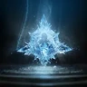
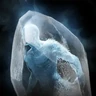
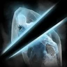

Прогресс прокачки
Отмечай шаги по ходу игры. Прогресс хранится в этом браузере, отдельно для каждого класса.
WIP Гайд в работе
Надёжного глобального источника по этому классу пока нет. Гайд собран из корейских гайдов и глобальных данных о скиллах — считай его отправной точкой; он будет переработан, когда появятся нормальные глобальные билды.
Обзор
Волшебник — хрупкая дальнобойная «стеклянная пушка», которая кастует и огонь, и лёд. Огонь даёт урон — Огненная метка помечает цель, а Зарево превращает метку в урон, — а лёд замедляет, приковывает и замораживает, чтобы до тебя никто не добежал. Основной бурст укладывается в 10-секундное окно под Усиление стихий.
Билд в одном предложении
Открывай бой Замедленный взрыв и Усиление стихий, ставь Стена огня и Метель, дальше крути огненную и ледяную линии, а Огненная стрела держит ману выше 50%.
Собрано по корейским гайдам (PvE-гайд Vortex Gaming после баланс-патча, MMO Codex) и переведено на глобальные названия скиллов с questlog. Глобального билда Волшебника от проверенного игрока пока нет.
Глобальный 1 сезон: что меняется
Глобальные серверы открываются 5 октября 2026 (ранний доступ для Founder's Pack — с 30 сентября). Что это значит для Волшебника:
- 4 слота стигм, максимум 20. В Корее Усиление стихий, Стена огня, Замедленный взрыв и Метель все на 20 — на глобалке поначалу до 20 дотянется только одна.
- Скиллы на 16, а не на 20. Выше 16 скиллы поднимают арканы и кольца, а они приходят медленно — специализации ниже подобраны под 16.
- На старте нет скорости боя. Длинные касты бьют по урону; где можно, бери специализации на скорость умений.
- PvP: все стартуют в одинаковой слабой экипировке, меты ещё нет.
Скиллы
Шесть скиллов качаются до 16, остальные остаются на 12. Корейские игроки позже поднимают Зарево, Ледяную цепь и Леденящий ветер до 20.
-
Зарево 16Основной урон по цели с Огненной меткой, восстанавливает ману. На 16 каждое попадание сокращает Исток силы.
- 8Отложенный урон через 3s
- 12Гарантир. мультиудар при попадании
- 16Перезарядка [Истока силы] -3 сек. при попадании
Все специализации
- 8Поглощение 3% ОЗ
- 8Восстановление ОМ +50%
- 8Отложенный урон через 3s
- 12Гарантир. мультиудар при попадании
- 16Перезарядка [Истока силы] -3 сек. при попадании
-
Огненная стрела 16Филлер, который восстанавливает ману. На 12 сам вешает Огненную метку, на 16 сбрасывает Зарево.
- 8Восстановление ОМ +20%
- 12Наложение Огненной метки на 5 сек. при попадании [Испепелением]
- 16Завершение перезарядки [Зарева] при попадании [Испепелением]
Все специализации
- 8Восстановление ОМ +20%
- 8Поглощение 1% ОЗ
- 8Шанс мультиудара +50% при попадании
- 12Наложение Огненной метки на 5 сек. при попадании [Испепелением]
- 16Завершение перезарядки [Зарева] при попадании [Испепелением]
-
Леденящий ветер 16Поле с корнями, на 12 гарантированно критует; на 16 сокращает Заморозку.
- 8Замена на умение с возможностью перемещения
- 12Крит. удар, несмотря на блок и уклонение
- 16-1 с к времени перезарядки [Заморозки] при попадании
Все специализации
- 8Время призыва [Леденящего ветра] +1 сек.
- 8Замена на умение с возможностью перемещения
- 8Эффект притягивания
- 12Крит. удар, несмотря на блок и уклонение
- 16-1 с к времени перезарядки [Заморозки] при попадании
-
Ледяная цепь 16Водный филлер без перезарядки, замедляет (Призыв холода срабатывает по замедленным).
- 8СКР умений +20%
- 12Перезарядка [Оков зимы] -1 сек. при попадании
- 16Шанс 5% заморозить на 2 сек. при попадании [Волной холода]
Все специализации
- 8Затрата ОМ -20%
- 8СКР умений +20%
- 8Чем меньше целей попадания, тем больше увелич. урона (макс. до 12%)
- 12Перезарядка [Оков зимы] -1 сек. при попадании
- 16Шанс 5% заморозить на 2 сек. при попадании [Волной холода]
-

Оковы зимы 16+20% к урону в PvE на 5 сек. при попадании — кастуй внутри бурста.- 8Увеличение урона в PvE +20%, увеличение урона в PvP +10% на 5s при попадании [Оковами зимы]
- 12Добавление 2-ой комбинации [Иллюзия зимы]
- 16Перезарядка [Оков зимы] -15 сек.
Все специализации
- 8Замена на умение с возможностью перемещения
- 8Шанс 30% заморозить на 3 сек. при попадании [Оковами зимы]
- 8Увеличение урона в PvE +20%, увеличение урона в PvP +10% на 5s при попадании [Оковами зимы]
- 12Добавление 2-ой комбинации [Иллюзия зимы]
- 16Перезарядка [Оков зимы] -15 сек.
-
Исток силы 16+Атака и Точность на 10 сек.; на 16 сокращает перезарядку всех умений на 10 сек.
- 8АТК доп. +10%
- 12СКР боя +10%
- 16Перезарядка всех умений -10 сек.
Все специализации
- 8Затрата ОМ -10%
- 8АТК доп. +10%
- 8Макс. ОМ +500
- 12СКР боя +10%
- 16Перезарядка всех умений -10 сек.
-
Адское пламя 12АоЕ с зарядом до 3 уровней — зачистка пачек. Опытные корейские игроки качают его до 20.
- 8Постоянный урон стихии огня на 10s при попадании
- 12Игнорирование блока и УКЛ, попадание мультиударом
Все специализации
- 8СКР умений +30%
- 8Постоянный урон стихии огня на 10s при попадании
- 8Замена на умение с возможностью перемещения
- 12Игнорирование блока и УКЛ, попадание мультиударом
- 16Перезарядка -15 сек.
-
Огненный гарпун 12Каждый снаряд сокращает перезарядку Адского пламени.
- 8СКР умений +20%
- 12Перезарядка [Адского пламени] -2 сек. за каждый снаряд
Все специализации
- 8Затрата ОМ -50%
- 8СКР умений +20%
- 8-60% получ. исцеление на 5s при попадании
- 12Перезарядка [Адского пламени] -2 сек. за каждый снаряд
- 16Урон +15% за каждый снаряд (макс. 75%)
-

Заморозка 12Заморозка по области; при попадании сбрасывает Замораживающий взрыв.- 8Перезарядка -5 сек.
- 8Завершение перезарядки [Замораживающего взрыва] при попадании Заморозкой
Все специализации
- 8Восстановление 200 ОМ
- 8Перезарядка -5 сек.
- 8Завершение перезарядки [Замораживающего взрыва] при попадании Заморозкой
- 12Точность Заморозки по игрокам +25%
- 16Длительность Заморозки +1 сек.
-

Замораживающий взрыв 12Только по замороженным целям; на 12 критует.- 8Замена на умение с возможностью перемещения
- 12Крит. удар, несмотря на блок и уклонение
Все специализации
- 8Поглощение 7% ОЗ
- 8Замена на умение с возможностью перемещения
- 8Шанс 75% оттолкнуть на 2 м
- 12Крит. удар, несмотря на блок и уклонение
- 16Вероятность 50% сбросить время перезарядки
-
Огненная пальба 12Только по целям в Ошеломлении.
- 8Восстановление 120 ОМ
- 12Гарантир. мультиудар при попадании
Все специализации
- 8Поглощение 5% ОЗ
- 8Восстановление 120 ОМ
- 8Замена на умение с возможностью перемещения
- 12Гарантир. мультиудар при попадании
- 16Перезарядка всех умений -1s при попадании
-
 Снятие шока 12Снятие контроля с лечением.
Снятие шока 12Снятие контроля с лечением.- 8При использовании [Снятия шока] восст. 20% ОЗ
- 12Длительность Непреклонности +2 сек.
Все специализации
- 8Добавляет 2-ую комбинацию [Проклятие: Вековое древо]
- 8При использовании [Снятия шока] восст. 1000 ОД
- 8При использовании [Снятия шока] восст. 20% ОЗ
- 12Длительность Непреклонности +2 сек.
- 16Стойкость к урону в PvE +50% и стойкость к урону в PvP +25% во время действия Непреклонности
Пассивки
| Пассивка | Зачем |
|---|---|
| Аура пламени | Точность и увеличение урона в PvE — качается первой. |
| Дар усиления | +20% к урону в PvE, пока маны 25%+, и дополнительные удары. |
| Огненная метка | Вешает Огненную метку, без которой не работает Зарево. |
| Мантия | Макс. мана и шанс крита, пока маны 50%+. |
| Пелена льда | Защита и замедление атакующих — для рейдов. |
Четыре пассивки зависят от маны (Дар усиления, Мантия, Снежная кольчуга, Поглощение силы) — не давай ей проседать.
Экипировка и статы
- Манастоуны: Атака, шанс крита, Точность.
- Следи за макс. маной и её регеном, пока ротация не перестанет упираться в ману.
- Какой тир экипировки добивать, станет понятно после глобального запуска.
Доски Daevanion
Daevanion поднимает скиллы с 10 до 14 и даёт статы. Каждый синий узел — +1 уровень его скилла.
- Приоритет: синие узлы Зарево, Леденящий ветер, Ледяная цепь, затем оранжевые.
- Приоритет: синие узлы Заморозка, Оковы зимы, Огненный гарпун.
- Ariel (PvE) на 45, а не Azphel.
- Azphel (PvP) на 45.
Стигмы
-
Усиление стихий Lv 20+20% к атаке огнём и водой на 10 сек. (+10% сверху на 20) — это и есть окно бурста. Качай первой.
- 5Меткость +200
- 10[Аура пламени] Пассивный эффект x1,5
- 15Пасс. эффект [Дара усиления] x1,5
- 20АТК стихии огня и стихии воды доп. +10%
Все специализации
- 5Меткость +200
- 10[Аура пламени] Пассивный эффект x1,5
- 15Пасс. эффект [Дара усиления] x1,5
- 20АТК стихии огня и стихии воды доп. +10%
-
Стена огня Lv 10Огненное поле с периодическим уроном; Тлеющие угли добавляют урон с каждым попаданием.
- 5Усиление: Догорающее пламя: доп. урон при атаке
- 10Ширина барьера +2 м
Все специализации
- 5Усиление: Догорающее пламя: доп. урон при атаке
- 10Ширина барьера +2 м
- 15Время призыва [Стены огня] +2 сек.
- 20Длительность Догорающего пламени +10 сек.
-
Метель Lv 10Водное поле с Обморожением и шансом корней.
- 5Усиление обморожения: доп. урон при атаке
- 10Шанс 30% взять в плен на 2 сек.
Все специализации
- 5Усиление обморожения: доп. урон при атаке
- 10Шанс 30% взять в плен на 2 сек.
- 15Время призыва [Метель] +3 сек.
- 20Длительность Обморожения +10 сек.
-
Замедленный взрыв Lv 10Цель получает от тебя +15% урона в течение 4 сек.; на 10 перезарядка сокращается до 20 сек.
- 5Восстановление 200 ОМ
- 10Перезарядка [Замедленного взрыва] -10 сек.
Все специализации
- 5Восстановление 200 ОМ
- 10Перезарядка [Замедленного взрыва] -10 сек.
- 15Смена на массовое умение
- 20Получ. урон доп. +10%
-
Стальная защитная оболочка прокачкаЩит на 16% макс. ОЗ — держи его на соло-прокачке.
- 5СКР движ. +10%
- 10Восстановление ОЗ с определенным интервалом
Все специализации
- 5СКР движ. +10%
- 10Восстановление ОЗ с определенным интервалом
- 15+10% к стойкости к урону в PvE и +5% к стойкости к урону в PvP
- 20Перезарядка -15 сек.
-
Ледяной удар альт.АоЕ-бурст с шансом Заморозки; замена Метели на коротких боях.
- 5Чем больше целей попадания, тем больше увеличение урона (макс. до 20%)
- 10Перезарядка -30 сек.
Все специализации
- 5Чем больше целей попадания, тем больше увеличение урона (макс. до 20%)
- 10Перезарядка -30 сек.
- 15Шанс 50% заморозить на 3 сек.
- 20Игнорирование блока и УКЛ, попадание мультиударом
Макрос и ротация
В AION 2 есть два разных инструмента:
- Линия на кнопке — несколько скиллов на одной кнопке панели. Нажатие кастует готовый скилл с наивысшим приоритетом, и в AION 2 наивысший приоритет у нижнего слота. Карточки показывают линию сверху вниз, как в игре.
- Встроенный макрос — пока ты держишь его клавишу, он по очереди нажимает кнопки панели и отменяет хвосты анимаций. Скиллы на перезарядке пропускаются.
1. Линии на кнопках
- 4 Огненная стрела
- 3 Огненный гарпун
- 2 Зарево
- 1 Огненная пальба
Порядок как в игре, сверху вниз. 1 = высший приоритет — нижний слот.
Зарево загорается только по цели с Огненной меткой, поэтому стоит почти внизу; Огненная стрела заполняет паузы и вешает следующую метку.
- 3 Ледяная цепь
- 2 Заморозка
- 1 Замораживающий взрыв
Порядок как в игре, сверху вниз. 1 = высший приоритет — нижний слот.
Замораживающий взрыв срабатывает, как только прошла Заморозка; Ледяная цепь — филлер.
2. Встроенный макрос
Повесь его на среднюю кнопку мыши. Задержка 10 мс в каждом слоте (40–50 мс при высоком пинге):
- 1Огненная линия10 мс
- 2Замедленный взрыв10 мс
- 3Леденящий ветер10 мс
- 4Ледяная линия10 мс
Адское пламя — скилл с зарядом, а Усиление стихий — бафф под окно бурста: оба держи вне макроса.
3. Открытие бурста
- Замедленный взрыв прямо перед пулом танка.
- Усиление стихий и Исток силы.
- Стена огня + Метель под босса.
- Леденящий ветер, затем Оковы зимы ради +20% к урону.
- Адское пламя на 3 заряда, дальше макрос.
4. Что нажимать на самом деле
- ДержатьБазовая атака на ЛКМ, ледяная линия на ПКМ, макрос на СКМ.
- ВручнуюОткрытие бурста каждый раз, когда откатилось Усиление стихий, Адское пламя, Снятие шока.
Итог
- Скиллы: Зарево, Огненная стрела, Леденящий ветер, Ледяная цепь, Оковы зимы, Исток силы 16; остальное 12.
- Стигмы: Усиление стихий 20, Стена огня 10, Метель 10, Замедленный взрыв 10.
- Пассивки: Аура пламени, Дар усиления, Огненная метка, Мантия.
- Мана: держи выше 50% — Огненная стрела и Зарево её восстанавливают.
Как сражаться во время прокачки
- Пачки: Леденящий ветер (корни + притягивание) → Адское пламя → Ледяная цепь, пока не упадут.
- Элитки: Огненная стрела на Огненную метку → Зарево → Огненный гарпун, кайтя замедлениями Ледяная цепь.
- Мана: играй в режиме с таргетом, чтобы автоатака не прерывалась, и вплетай Огненную стрелу.
- Мало ОЗ: Стальная защитная оболочка и дистанция — лечения у Волшебника нет.
Макрос на прокачке
Поначалу хватает двух линий: огненная на MB5 и ледяная на ПКМ. Встроенный макрос добавляй, когда появятся Леденящий ветер и стигмы.
- 3 Огненная стрела
- 2 Огненный гарпун
- 1 Зарево
Порядок как в игре, сверху вниз. 1 = высший приоритет — нижний слот.
- 2 Ледяная цепь
- 1 Заморозка
Порядок как в игре, сверху вниз. 1 = высший приоритет — нижний слот.
Источники
- Vortex Gaming — PvE-гайд на Волшебника после баланс-патча — уровни скиллов, специализации, стигмы, открытие боя и макрос (корейские серверы)
- MMO Codex — гайд на Волшебника Aion 2 — приоритет стигм, порядок макроса, прокачка в режиме с таргетом
- questlog.gg — данные и названия скиллов из глобального клиента
- Grobs — AION 2 Macro Guide — как работают линии на кнопках и встроенный макрос
Сообщить об ошибке Откроет issue на GitHub для этой страницы